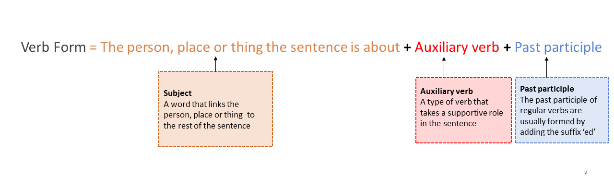

Activity 17: States and territories of Australia
Audio: States and territories
Listen to the audio States and territories.
Listen to the audio. Label the states and territories from 1 to 7 in the correct order as you hear them
| Order | Steps |
|---|---|
1 |
Queensland |
3 |
Victoria |
2 |
New South Wales |
6 |
Western Australia |
5 |
South Australia |
7 |
Northern Territory |
4 |
Tasmania |
Present-perfect tense
The present-perfect tense of a verb is used to talk about an action that began before the time you are speaking about and is still happening.
To make the present perfect tense, you use the auxiliary verb ‘has’ or ‘have’ and the past participle.

An auxiliary verb is a type of verb that takes a supportive role in the sentence.
A past participle of a regular verb is usually formed by adding the suffix ‘ed’.
The table below lists examples of present perfect sentences and their meaning.
| Present-perfect sentence | Present-perfect verb | Meaning |
|---|---|---|
| We have lived in Sydney for 10 years. | have lived | The subject has lived in Sydney for 10 years and is still living there. |
| He has read many kinds of books. | has read | The reader is still reading many kinds of books. |
| The student has gone to the library. | has gone | The student went to the library and is still there. |
Answers
Listen to the audio. Label the states and territories from 1 to 7 in the correct order.
| Order | Steps |
|---|---|
| 1 | Queensland |
| 3 | Victoria |
| 2 | New South Wales |
| 6 | Western Australia |
| 5 | South Australia |
| 7 | Northern Territory |
| 4 | Tasmania |
Show transcript – States and territories
Carlos: Ki Sook?
Ki Sook: Hm?
Carlos: I'm just reading this article about Australia, and it says something about 6 states. That's not right, is it?
Ki Sook: How do you mean?
Carlos: Well, there are 7, aren't there? I'm sure there are 7.
Ki Sook: 7 states? No, 6 is right.
Carlos: Okay, let's count them. Queensland, that's 1. New South Wales, 2. Victoria, 3. Tasmania, 4. South Australia, 5. Western Australia, 6. Northern Territory, 7.
Ki Sook: No, the Northern Territory is not a state, it's a territory
Carlos: Yeah, it's called a territory, but it's the same, isn't it?
Ki Sook: No, it's not the same. They always say there are 6 states and 2 territories: the Northern Territory and the ACT, the Australian Capital Territory, where Canberra is. And territories are different from states.
Carlos: Okay, so what's the difference? What's the difference between a state and a territory?
Ki Sook: It's just. They're just. I don't know. They're just different.
Carlos: They're just different, eh? Hmm, okay. The article is right, then. 6 states.
Ki Sook: Yep.
Carlos: I'll remember that.